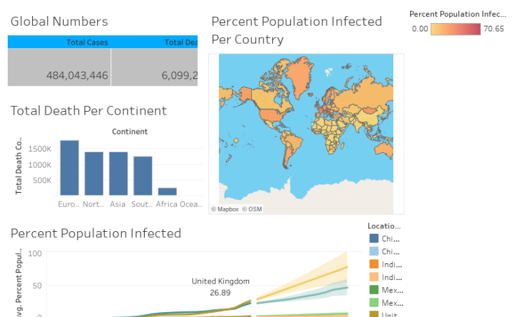

In this project we learn to clean data. We will be working with the Nashville housing data set, cleaning duplicate records and non-numeric date tables, and performing some preliminary analysis to look at the number of housing permits over time.

This project is intented to explore the impact of the Covid19 on a worldwide scale, such as how many people are infected, how many deaths, how many active cases, and how the virus is spreading. All visualizations were built using Tableau and they all were build on top of queries written in SQL Server.

This project is intented to explore the impact of the Covid19 on a worldwide scale, such as how many people are infected, how many deaths, how many active cases, and how the virus is spreading. All visualizations were built using Tableau and they all were build on top of queries written in SQL Server.
A path that runs through various visualizations. At the end of this path, you will reach visualizations that shows you why data visualization exist in the first place. Enjoy yourself!.

Product sales for a company can directly affect the gain or loss of gross earnings. To explore associations between the various factors and contribute to gross revenue, we performed multiple regression analysis on the collected variables to gain statistical significance and find out which factor contributed the most to gross revenue.